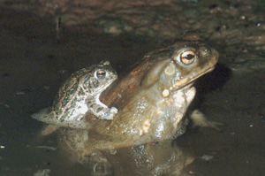

The
Sonoran Desert Toad
The
Sonoran Desert ToadThe
Sonoran Desert Toad
Bufo alvarius

The following is total bullshit but it's a fun read...
Many of you are familiar with Bufo Alvarius, the infamous Psychedelic Toad of the Sonoran desert. Episodes of toad-licking teenagers occasionally show up in newspapers, as another generation of thrill-seekers learns of the powerful but short-lived effects of the toad's venom. This toxin is secreted through glands located on the toad's neck and feet when agitated; apparently the trait evolved as a deterrence to predators. Though quick acting, the psychedelic may not act fast enough for a coyote or snake to release its prey, but it seems clear enough that the ensuing "trip" would be sufficient warning against future predation. Thus the individual gives his life for the good of the species.
Readers of Wade Davis' The Serpent and the Rainbow will remember that the venom of the Bufo Marinus, the Sea Toad, is used by Haitian houngans to make zombie poison. The toad is placed in a jar or suitable container with a stinging sea worm; the two battle each other, causing sufficient agitation the toad to produce plenty of the drug for the dark operation. When mixed with just a little venom from the poisonous blowfish - renown in Japanese sushi bars as fugu - the intended victim becomes so completely catatonic that he is usually pronounced dead and buried. One wonders how many unintentional overdoses of this mixture induced actual death in the potential zombie. After a few days, the drug wears off, the zombie is disinterred and rebaptized, and put to work. A steady diet of datura ensures his continued complacency.
Unlike its aquatic cousin, B. Alvarius seems to have only been used recreationally. Discovered during the height of the hedonistic 1960's, the venom of the toad was collected and smoked by hippies looking to expand their minds. The toad is easily caught by hand anywhere near the irrigation canals in the Sonoran Desert of Arizona or the Mexican state of Sonora. A little handling is all it takes for the toad to become sufficiently agitated to produce the venom. After carefully scraping the raw poison from its glands, the toad is gently released back into the wild. A few days is usually needed for it to recover from a thorough "milking" such as this.
Unknown to many, however, is the incredible role this toxin plays in the mating cycle of the toad. Though each toad is entirely immune to its own venom, slight enzymatic differences between the sexes means that they are susceptible to their partner's. During the act of mating, the toads become just as agitated as they would escaping a predator, and release copious quantities of the hallucinogenic drug. The psychedelic is subsequently absorbed through the skin by the other partner, where it has immediate effect. The toads reach climax in a psychedelic frenzy, the libido of each inflamed with the power of the others drug. Intercourse for the toads results in the ultimate mind-blowing orgasm, excellent impetus for the successful propagation of the species. This is the true reason for the folktales of the toad's aphrodisiac properties.